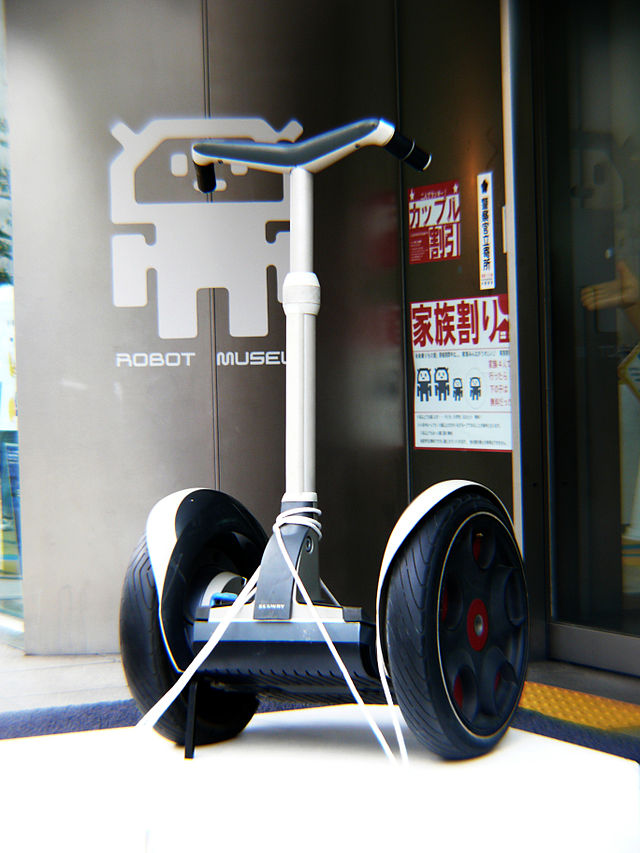
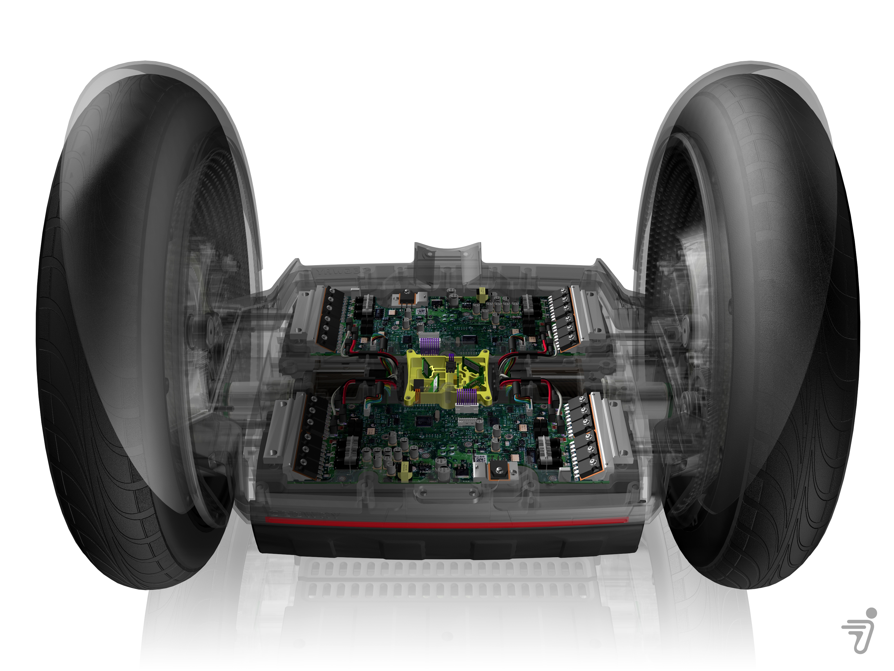
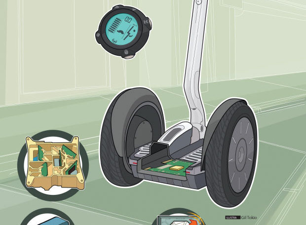
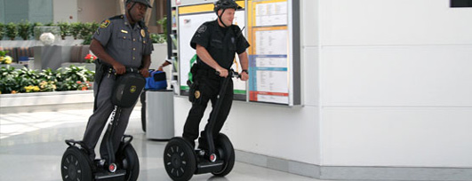
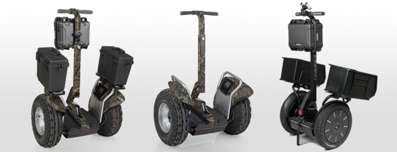

El Segway és un vehicle de transport lleuger, giroscòpic, elèctric, controlat per un ordinador, inventat per Dean Kamen i presentat el desembre de 2001.
És produït per la companyia Segway Inc., amb seu a Bedford, Estats Units.
A l'interior te un motor i uns sensors de moviment que fan que quan tu tiris el cos una mica endevant, les rodes començin a rodar cap a davant i el mateix passa per anar enrere i als costats.
Ens pot aportar el anar més ràpid i comodament d'un lloc a un altre de la ciutat, fer rutes per al camp...
També pot servir per als policies o vigilants de seguretat, que poden fer-lo servir per patrullar per la ciutat i controlar més terreny en menys temps.

O, com es veu a la següent imatge, es podria adaptar per portar maletes i així no tenir que carregar-les a sobre, i fos més facil moure's amb tot l'equipatge.
